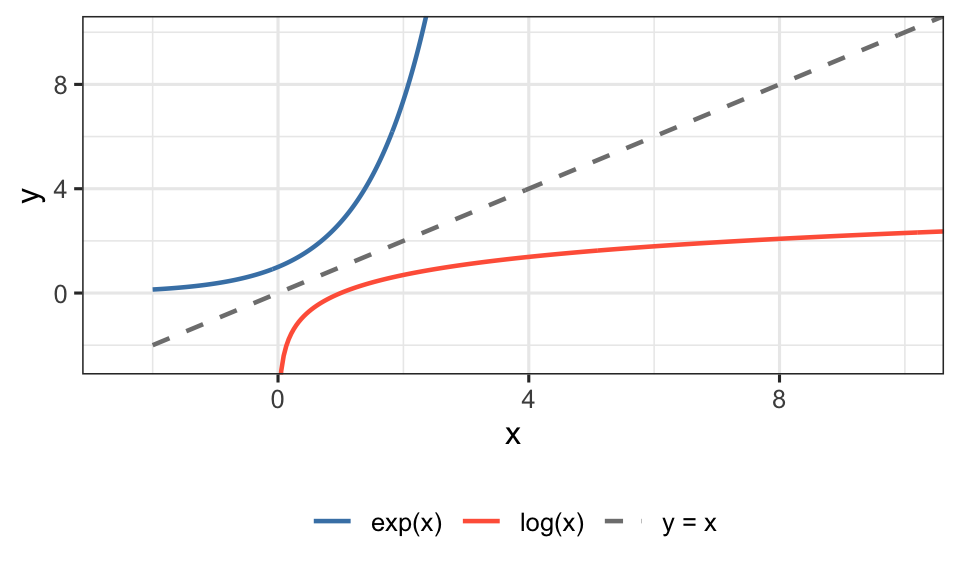

exp(1) # e^1[1] 2.718282exp(2) # e^2[1] 7.389056exp(2.5) # e^2.5[1] 12.18249David Gerard
June 25, 2026
In statistics, we sometimes transform data before analysis. The log transformation is the most common transformation used with \(t\)-tools because it can simultaneously:
This review covers the mathematics behind the logarithm and exponential functions so that you can apply and interpret log transformations confidently.
\[e = 2.71828\ldots\]
\(e\) is an irrational constant (like \(\pi\)) that appears throughout mathematics, probability, and statistics. It is called Euler’s number.
Integer powers of \(e\) work just like any other base:
\[e^1 = e \approx 2.718 \qquad e^2 = e \cdot e \approx 7.389 \qquad e^3 = e \cdot e \cdot e \approx 20.086\]
Non-integer powers are also defined. For example:
\[e^{2.5} = e^{5/2} = \left(\sqrt{e}\right)^5 \approx 12.182\]
In R, compute powers of \(e\) with exp():
The natural logarithm \(\log(x)\) answers the question:
To what power must I raise \(e\) to get \(x\)?
Formally, \(\log(x) = a\) means \(e^a = x\).
In statistics, “\(\log\)” always means the natural logarithm (base \(e\)), not \(\log_{10}\). In R, log(x) is the natural log.
Some examples:
| Expression | Value | Because |
|---|---|---|
| \(\log(e)\) | \(1\) | \(e^1 = e\) |
| \(\log(e^3)\) | \(3\) | \(e^3 = e^3\) |
| \(\log(e^{2.5})\) | \(2.5\) | \(e^{2.5} = e^{2.5}\) |
| \(\log(1)\) | \(0\) | \(e^0 = 1\) |
| \(\exp(0)\) | \(1\) | same as above |
Domain: \(\log(x)\) is only defined for \(x > 0\). This is why we can only log-transform positive data.
[1] 3[1] 5[1] 0The functions \(y = e^x\) and \(y = \log(x)\) are inverses of each other — they are mirror images across the line \(y = x\):

Notice:
These properties follow directly from the definition and are used constantly when working with log transformations.
\[\log(ab) = \log(a) + \log(b)\] \[\log\!\left(\frac{a}{b}\right) = \log(a) - \log(b)\] \[\log(a^r) = r\,\log(a)\]
\[\exp(a + b) = \exp(a)\,\exp(b)\] \[\exp(a - b) = \frac{\exp(a)}{\exp(b)}\]
\[\log(\exp(a)) = a \qquad \exp(\log(a)) = a\]
These last two are the most important: log and exp undo each other.
Simplify \(\log(3 \cdot 7)\).
\[\log(3 \cdot 7) = \log(3) + \log(7) \approx 1.099 + 1.946 = 3.045\]
Check: \(\log(21) \approx 3.045\). \(\checkmark\)
Simplify \(\log(20/4)\).
\[\log(20/4) = \log(20) - \log(4) \approx 2.996 - 1.386 = 1.609\]
Check: \(\log(5) \approx 1.609\). \(\checkmark\)
Simplify \(\exp(\log(7) - \log(3))\).
\[\exp(\log(7) - \log(3)) = \exp\!\left(\log\!\left(\frac{7}{3}\right)\right) = \frac{7}{3} \approx 2.333\]
The key step: \(\exp(\log(\cdot)) = \cdot\).
If \(\log(x) - \log(y) = 1.4\), what is \(x/y\)?
\[\log(x) - \log(y) = \log\!\left(\frac{x}{y}\right) = 1.4\]
\[\frac{x}{y} = e^{1.4} \approx 4.055\]
So \(x\) is about 4 times larger than \(y\).
Logarithms can be defined for any base \(b > 0\).
\[\log_b(x) = a \quad \text{means} \quad b^a = x\]
The base-2 logarithm \(\log_2(x)\) counts how many times you must multiply 2 by itself to get \(x\). For example:
\[2 \times 2 \times 2 = 8 \quad \Rightarrow \quad \log_2(8) = 3\]
Equivalently, it counts how many times you must divide \(x\) by 2 to reach 1:
\[8 \xrightarrow{\div 2} 4 \xrightarrow{\div 2} 2 \xrightarrow{\div 2} 1 \quad \Rightarrow \quad \log_2(8) = 3\]
In R, use log(x, base = 2) or log2(x) for base-2, and log10(x) for base-10. In this course, we always use the natural log log(x).
Here is why the log properties matter for interpreting the two-sample \(t\)-test on log-transformed data.
Suppose we log-transform two groups: \[W_i = \log(Y_i) \qquad Z_j = \log(X_j)\]
The \(t\)-test estimates the difference in means on the log scale: \[\hat{\delta} = \overline{Z} - \overline{W}\]
If \(\log(X)\) and \(\log(Y)\) are both symmetric, then \(\text{Average}(\log X) = \log(\text{Median}(X))\), so:
\[\hat{\delta} \approx \log(\text{Median}(X)) - \log(\text{Median}(Y)) = \log\!\left(\frac{\text{Median}(X)}{\text{Median}(Y)}\right)\]
Exponentiating both sides: \[e^{\hat{\delta}} = \frac{\text{Median}(X)}{\text{Median}(Y)}\]
So \(e^{\hat{\delta}}\) estimates the ratio of medians — a multiplicative comparison on the original scale.
A \(t\)-test on log-transformed data gives \(\hat{\delta} = 0.916\). Interpret this on the original scale.
\[e^{0.916} \approx 2.5\]
Group \(X\) has a median approximately 2.5 times larger than group \(Y\).
A 95% CI for \(\delta\) is \((0.2,\; 0.9)\). Give a 95% CI on the original scale.
Exponentiate the endpoints: \[\left(e^{0.2},\; e^{0.9}\right) \approx (1.22,\; 2.46)\]
We are 95% confident that the median of group \(X\) is between 1.22 and 2.46 times the median of group \(Y\).
1. Without a calculator, evaluate the following. Explain your reasoning.
2. Use the log properties to simplify each expression to a single log or a number. Then verify your answer in R with log().
3. Solve for \(x\).
4. Use R to fill in the table below. What pattern do you notice as \(x\) increases? What about as \(x\) decreases toward 0?
5. Consider two groups with medians 12 and 4 on the original scale.
6. A two-sample \(t\)-test on log-transformed data yields the following 95% CI for \(\delta\) (log-scale difference, Treatment minus Control): \((0.40,\; 1.25)\).
7. The log transformation is appropriate when three conditions hold. For each dataset described below, decide whether a log transformation is likely appropriate. Justify your answer.